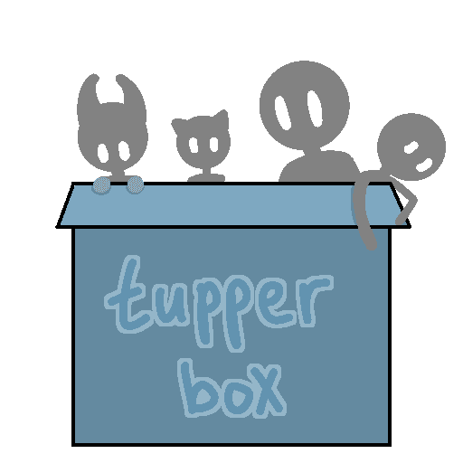

Illinois-chan 5/14/2023 4:27 PM
Happenings of Dr. Florenstine's Hotel Clinic
It was hard shaking that eerie, ominous feeling. The one he’d had since first laying eyes upon the hotel he now called his temporary home- Nay, since he’d laid eyes upon that Servant.
That damned Servant.
Every once in a while, he would feel as though the devil himself were watching him, only to turn around and witness the strange visage of the man in a bowler hat. The unremarkable, unmemorable visage of a failed hotelier whose name could be found nowhere. And who the hell wore bowler hats these days?
Whatever the case, the Assassin-class Servant Pratt and his Master, William Hossfeld - another unusual, yet insignificant name - had given him complete and total access to their workshop… a shoddy, abandoned hotel. Not that he wasn’t unappreciative, of course, but the shoddy construction and cleanliness (or lack thereof) of the place would make any doctor worry for the health of their patients.
As for his own health-
The doctor was taking a short break from the clinic, leaning back in an otherwise uncomfortable wooden chair with his feet up on the front desk. A bottle and poured glass on a fine red wine he’d procured while out on a walk sat upon said desk as well, though the doctor had largely forgotten about it, getting lost in his own thoughts without so much as a drop of alcohol in his system. Yet.
Seeing the hotel lobby-turned-waiting room devoid of any life but his own was a refreshing change of pace, given the expected influx of patients he’d had for some time now. He was lucky that he hadn’t needed to turn to magecraft for any cases so far, but it was this very same refusal to use his gifts that led to the exhaustion he felt.
10:11 PM
If only it were possible to open something like a “magic hospital”, where most, if not all ailments could be treated with the expenditure of a little magic energy, and Mystic Codes could be created that would allow for more effective treatment even by those who lacked the same gifts as him. That just isn’t the nature of magic, sadly. It wasn’t something to help the world as a whole. It was something to help out a few lucky individuals, at most.
With that thought in mind, the doctor would lean forward in order to swipe the glass of wine off the desk, downing the whole thing in an instant before slamming the glass back down, making sure to pull his strength at the last second in order to avoid breaking it.

Nonetheless, the noise that came with the doctor’s sudden action would serve to startle the elderly man that had just opened the door to the clinic.
“Oh! Er, uh, young man, would this happen to be the new clinic I’ve been hearing about?”
”Shit! Shit, shit, shit!”
The old man’s entrance into the lobby startled Florence just as much as he had startled the old man. In a flustered hurry, the doctor would shoot up off his chair, immediately throwing the wine glass and bottle off the desk and into the trash can underneath. Standing and staring down for only a moment after realizing what he’d just done, the doctor would rush over to the man, looking him up and down for any obvious wounds or injuries, or any visual details that would indicate the man was suffering from a medical problem.
None. For his age the man looked and seemed perfectly healthy, but that didn’t mean there was nothing going on with him.
“My apologies, that was unbecoming of me. I believe you’ve found yourself in the right place. What would happen to be the problem, sir?”
The initial look on the man’s face said everything. The doctor was flustered, tired, and somewhat unkempt, and his condition was rather obvious.
Despite this, the man’s expression would quickly change to fit a slight, unjudging smile.
“Hehe, sorry for startlin’ ya, doc. I’m just here to see my wife. My son told me she’d tripped and hit her head on the ground, and that he took her here to see ya. Her name’s Hedaya Ahmed, if that helps at all.”
Florence would attempt a smile in return, but found his face rather uncooperative, deciding to speak through it as he battled his unruly facial muscles.
“Let’s see… Hedaya… Mrs. Ahmed… I- hmm… In any case, follow me. The rooms are up this way.”
Descending the stairs to the lobby was hard enough. Climbing up them was going to be much, much harder. Even to the old man, Florence’s ascent up the stairwell went at a snail’s pace. To the doctor’s relief, he failed to say anything about it, merely following along and averting his eyes whenever Florence struggled to make it up a step.
And yet, the doctor’s worries laid not with the condition he himself was in, but the name of his supposed patient.
Throughout the length of his entire career, the name of not a single patient had escaped his mind. And, yet, the name of an elderly old woman that was brought to him with a potential concussion was lost to him? There was the chance that their son had simply failed to give the doctor her name, but the matter of the fact was that he didn’t remember even meeting such a patient, nor even a young man who’d brought in their elderly mother as a patient.
At the top of the stairs, the doctor’s hurried, harsh breathing and hands-on-knees posture would make it seem as if he’d just ran an entire marathon, continuing this even after the elderly man with him made it up the stairs without so much as breaking a sweat.
“You- huff- can wait here, I’ll- huff- go check my- huff- papers. See if I can- cough, cough- find anything.”


Tupperbox
Bot Command | remove
Unregister a tupper
Usage:
tul!remove <name> - Unregister the named tupper from your list
tul!remove * - Unregister ALL of your tuppers (requires confirmation)
<required> | [optional] | do not include brackets in commands! | online guide: https://tupperbox.app/guide • 5/14/2023 10:17 PM
10:17 PM
Tupperbox
Bot Command | edit
Edit a proxied message you sent
Usage:
tul!edit [message] <content> - Edit a message. Reply to a message to edit that specific message, otherwise the most recent proxy is edited. You can also specify a message via message ID or message link.
You can also use this command by reacting to a proxy you sent with  or by using it in DMs with a message link.
or by using it in DMs with a message link.
or by using it in DMs with a message link. <required> | [optional] | do not include brackets in commands! | online guide: https://tupperbox.app/guide • 5/14/2023 10:17 PM
Illinois-chan 5/14/2023 10:22 PM
(My bad)
With one hand on the wall, leaning over as to put most of his weight against it, Florence would slowly make his way to the room he’d converted into an office, silently whining, “Why did I have to make my office at the end of the hall!”.
Against his best instincts, he did his best to ignore the pained groaning coming from a handful of the bed-laiden patients that were worse-for-ware, not wanting to be distracted when there could potentially be a missing patient, or worse. What he failed to ignore, however, was the broken door that led into the solitary room that remained like those of the former hotel - the room belonging to the “owners” of the place - though he gave it little more than a glance before carrying on.
The whole room was a mess of notes, papers, and medical equipment, with most of it pressed up against the walls where possible, a stark contrast to the squeaky-clean exam rooms and resting quarters occupied by patients. At the very least, patient files were stored neatly in a handful of large boxes, making accessing the information he needed a much easier task than having to dig through piles of random junk.
“Let’s see, let’s see… huh?”
There it was. A file labeled Ahmed, Hedaya.
Confusion. Pure confusion. Confusion that led to curiosity. Curiosity that led to anxiety. Anxiety that led to Florence tearing apart the file, examining every little bit and piece of it he could… only to find that the file he had on this woman was entirely empty. A woman he couldn’t remember anything about.
The last time he couldn’t remember anything about someone was-
“I’d like to go back home before the sun goes down.”
A moment of silence. Not a sound could be heard from his office but the creaking and various other sounds of the building he was in.
“I can’t seem to find the right files… Anything you can tell me about her, Mr. Ahmed? Height, weight, eye color, et cetera, et cetera?”
Another moment of pure silence. This pause was much longer, much tenser. So much so that one could cut it with a knife.
The longer the man waited to respond, the more it felt as if the Earth’s gravity had intensified by tenfold. The pumping of the heart could be heard in the ears. Every swallow of excess spit seemed to echo throughout the halls.
“I, uh, er, well- Now that you mention it, not… Not really. I must be a lousy husband to forget those sorts of things, yeah? Let me sit on it for a bit, I’m sure I’ll be able to remember something-”
“Ah, here we are! Let’s see… Aa, Ab… hmm… Nope, no Ahmed. My apologies Mr. Ahmed, but it seems your son must have taken your wife to a real local clinic. I can ask around a bit if that would be of any assistance to you?”
“Well, damn. I appreciate the thought, but I’m sure she’ll come home sooner or later. Son said she was fine, after all.”
Normally, the doctor would have moved to lead the man back to the door, asking him to spread word of the clinic. At the very least, he’d have shouted some sort of farewell should he have been too busy for the earlier option. But…
This was too much.
Why would there be a file on her, but nothing in it?
He was the type to keep notes on every single patient he had, even ones that came in for simple first-aid. Even her husband seemed to have forgotten anything about her. It was as someone had wiped her from the face of the Earth.
A someone that could not only sneak into his office completely undetected, but someone that could wipe a person from existence. If there was any foul play involved in this, that was the only type of person that could do it.
Could a Servant have snuck in, or- or-
He refused to think it. What kind of half-assed doctor would set up shop in the den of that sort of monster? Not him, certainly. He was scary, and he was certainly a willing killer, at least concerning the Grail War… but was he the type to prey on innocent people?
“Who the hell are you, Pratt-?”

From behind, a shadow. As the doctor glanced down to look at it, he felt as if pure fear had manifested in the form of a cloudy miasma and infected not just his head and heart, but the entirety of the room. It was the telltale sign of the very man the doctor had moved to speak of.
“Enoch Pratt. A businessman, and little more than that. Does my answer satisfy you, Dr. Florenstine?”
The effect was immediate, as always. Extremely startled by “Pratt’s” sudden appearance, the doctor would launch the file box across the room, scattering notes and various other papers across the disheveled mess of a room. With a sigh, the doctor would turn to the nearly featureless man.
“How many times do I have to ask you not to suddenly show up behind me like that, Pratt?”
At best, he’d been heard. At worst, Pratt had been examining the whole thing as it was going on. A man like Pratt was certain to latch on to any little hiccups in one’s usual demeanor- information to be used when it best suited him. Something like that didn’t sit well with the doctor, who was already suspicious of the man and certain that Pratt was just as suspicious of him.
“...I have to ask. This file, this lady… did you have anything to do with this?”
Unlike the doctor and the old man, there was no hesitation in Pratt’s response. It was precise, and polite, not unlike just about every sentence that came out of his mouth.
“Mrs. Ahmed, yes? Whilst you were away on a walk, her son had arrived to pick her up. I must admit that I have an acute lack of knowledge concerning all things medical, so I simply did as they asked me to. The papers are no longer there as a result of her son asking that you release every material you may have on her to their possession. Allow me to apologize for any confusion this may have caused you, dear doctor.”
There was no give, no physical response to having spoken a lie, even to an eye as scrutinizing as a doctor’s.
“I- I see.”
There was something… off about this. Pratt’s story made decent enough sense, but it did nothing to answer for his loss of memory concerning his patient. It could just be that he felt constantly nervous around Pratt, but the fact that he was a Servant - an arcane weapon of war - made him seem at fault. That, and…
“No need, Pratt. The loss of the papers are of little consequence, anyhow. How about you help me pick up these-”
Just like that, the shadow was gone.
“-papers. Sigh. Oh well.”
Minutes passed. Then hours. Cleaning was more of a hassle than the doctor had made it out to be.
Eventually, the doctor found himself paid out atop the papers, having passed out upon them.
Though he remembered why it was that he was cleaning up papers, just about everything before that was a blur to him. A result of passing out, surely.
As for why he’d been looking through a file box in the first place… nothing. Even his reason for having come upstairs in the first place was unknown to him.
…Maybe he’d have another glass of that wine before heading back up for some real rest…